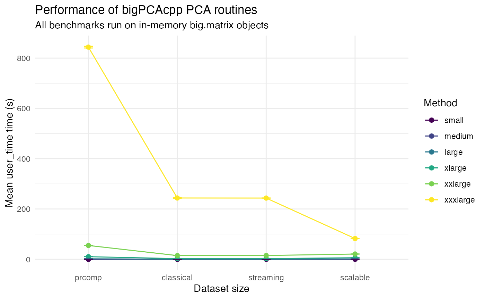
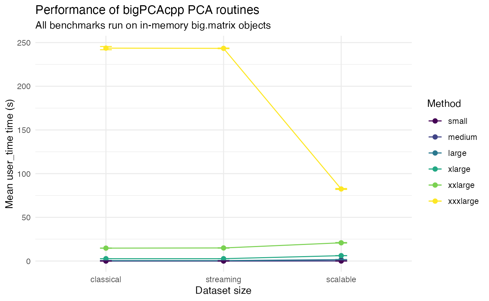

Benchmarking bigPCAcpp Workflows
Frédéric Bertrand
Source:vignettes/bigPCA-benchmarks.Rmd
bigPCA-benchmarks.RmdOverview
This vignette summarises the performance of the principal component
analysis (PCA) routines provided by bigPCAcpp across
matrices ranging from small to very large dimensions. All experiments
operate on in-memory [bigmemory::big.matrix] objects to
avoid file-backed storage and a baseline using base R’s
[stats::prcomp()] is included for context.
The benchmarking code was executed once, and the resulting dataset is
stored in the package as benchmark_results. The analysis
below relies exclusively on the saved dataset so that the vignette can
be built quickly.
data("benchmark_results", package = "bigPCAcpp")
str(benchmark_results)
#> 'data.frame': 360 obs. of 14 variables:
#> $ dataset : chr "small" "small" "small" "small" ...
#> $ rows : int 1000 1000 1000 1000 1000 1000 1000 1000 1000 1000 ...
#> $ cols : int 50 50 50 50 50 50 50 50 50 50 ...
#> $ ncomp : int 10 10 10 10 10 10 10 10 10 10 ...
#> $ method : chr "classical" "classical" "classical" "classical" ...
#> $ replicate : int 1 2 3 4 5 6 7 8 9 10 ...
#> $ user_time : num 0.003 0.003 0.002 0.002 0.002 ...
#> $ system_time: num 0.001 0 0 0 0 0 0 0 0 0 ...
#> $ elapsed : num 0.003 0.002 0.002 0.002 0.002 ...
#> $ success : logi TRUE TRUE TRUE TRUE TRUE TRUE ...
#> $ backend : chr "bigmemory" "bigmemory" "bigmemory" "bigmemory" ...
#> $ iterations : int NA NA NA NA NA NA NA NA NA NA ...
#> $ converged : logi NA NA NA NA NA NA ...
#> $ error : chr NA NA NA NA ...How the benchmarks were produced
The following chunk outlines the code that generated the stored results. The chunk is not evaluated when building the vignette to keep compilation times short, but it can be used to reproduce the dataset manually.
suppressPackageStartupMessages({
library(bigmemory)
if (requireNamespace("bigPCAcpp", quietly = TRUE)) {
library(bigPCAcpp)
} else {
if (!requireNamespace("pkgload", quietly = TRUE)) {
stop("bigPCAcpp must be installed or pkgload must be available", call. = FALSE)
}
pkgload::load_all(".")
}
})
sizes <- list(
small = list(rows = 1000L, cols = 50L),
medium = list(rows = 5000L, cols = 100L),
large = list(rows = 20000L, cols = 200L),
xlarge = list(rows = 50000L, cols = 300L),
xxlarge = list(rows = 100000L, cols = 500L),
xxxlarge = list(rows = 100000L, cols = 2000L)
)
method_runners <- list(
classical = function(mats, ncomp) {
pca_bigmatrix(mats$big, center = TRUE, scale = TRUE, ncomp = ncomp)
},
streaming = function(mats, ncomp) {
pca_stream_bigmatrix(mats$big, center = TRUE, scale = TRUE, ncomp = ncomp)
},
scalable = function(mats, ncomp) {
pca_spca(
mats$big,
ncomp = ncomp,
center = TRUE,
scale = TRUE,
block_size = 2048L,
max_iter = 25L,
tol = 1e-4,
seed = 42L,
return_scores = FALSE,
verbose = FALSE
)
},
prcomp = function(mats, ncomp) {
stats::prcomp(
mats$dense,
center = TRUE,
scale. = TRUE,
rank. = ncomp
)
}
)
replicates_for <- function(rows) {
if (rows <= 5000L) {
20L
} else if (rows <= 20000L) {
20L
} else {
10L
}
}
results <- list()
row_id <- 1L
set.seed(123)
for (dataset_name in names(sizes)) {
dims <- sizes[[dataset_name]]
message(sprintf("Generating dataset '%s' with %d rows and %d columns", dataset_name, dims$rows, dims$cols))
mat <- matrix(rnorm(dims$rows * dims$cols), nrow = dims$rows, ncol = dims$cols)
big_mat <- bigmemory::as.big.matrix(mat, type = "double")
ncomp <- min(10L, dims$cols)
reps <- replicates_for(dims$rows)
inputs <- list(dense = mat, big = big_mat)
for (method_name in names(method_runners)) {
runner <- method_runners[[method_name]]
for (rep in seq_len(reps)) {
gc()
gc()
message(sprintf("Running %s (replicate %d/%d) on %s", method_name, rep, reps, dataset_name))
res <- NULL
timing <- system.time({
res <<- tryCatch(
runner(inputs, ncomp),
error = function(e) e
)
})
success <- !inherits(res, "error")
backend <- if (success) {
backend_val <- attr(res, "backend", exact = TRUE)
if (is.null(backend_val) && !is.null(res$backend)) {
res$backend
} else {
backend_val
}
} else {
NA_character_
}
iterations <- if (success) {
iter <- attr(res, "iterations", exact = TRUE)
if (is.null(iter)) NA_integer_ else as.integer(iter)
} else {
NA_integer_
}
converged <- if (success) {
conv <- attr(res, "converged", exact = TRUE)
if (is.null(conv)) NA else as.logical(conv)
} else {
NA
}
results[[row_id]] <- data.frame(
dataset = dataset_name,
rows = dims$rows,
cols = dims$cols,
ncomp = ncomp,
method = method_name,
replicate = rep,
user_time = unname(timing[["user.self"]]),
system_time = unname(timing[["sys.self"]]),
user_time = unname(timing[["user_time"]]),
success = success,
backend = if (is.null(backend)) NA_character_ else as.character(backend),
iterations = iterations,
converged = converged,
error = if (success) NA_character_ else conditionMessage(res),
stringsAsFactors = FALSE
)
row_id <- row_id + 1L
}
}
rm(mat, big_mat)
gc()
gc()
}
benchmark_results <- do.call(rbind, results)
if (!dir.exists("data")) {
dir.create("data")
}
save(benchmark_results, file = file.path("data", "benchmark_results.rda"), compress = "bzip2")Summary statistics
Only successful runs are retained for the summaries. Replicate counts vary with matrix size (twenty runs for matrices up to 20,000 rows then tens runs).
successful <- benchmark_results[benchmark_results$success, ]
method_levels <- c("prcomp", "classical", "streaming", "scalable")
successful$method <- factor(successful$method, levels = method_levels, ordered = TRUE)
mean_user_time <- aggregate(user_time ~ dataset + method, successful, mean)
colnames(mean_user_time)[colnames(mean_user_time) == "user_time"] <- "mean_user_time"
sd_user_time <- aggregate(user_time ~ dataset + method, successful, sd)
colnames(sd_user_time)[colnames(sd_user_time) == "user_time"] <- "sd_user_time"
rep_counts <- aggregate(replicate ~ dataset + method, successful, length)
colnames(rep_counts)[colnames(rep_counts) == "replicate"] <- "n_runs"
summary_table <- Reduce(
function(x, y) merge(x, y, by = c("dataset", "method"), all = TRUE),
list(mean_user_time, sd_user_time, rep_counts)
)
summary_table$sd_user_time[summary_table$n_runs <= 1] <- NA_real_
summary_table$method <- factor(summary_table$method, levels = method_levels)
mean_user_time$dataset <- factor(mean_user_time$dataset,levels = c("small", "medium", "large", "xlarge", "xxlarge", "xxxlarge"),ordered = TRUE)
summary_table <- summary_table[order(summary_table$dataset,summary_table$method),]
knitr::kable(
summary_table,
digits = 3,
caption = "user_time time summaries (seconds) by dataset size and method."
)| dataset | method | mean_user_time | sd_user_time | n_runs | |
|---|---|---|---|---|---|
| 2 | large | prcomp | 1.861 | 0.031 | 20 |
| 1 | large | classical | 0.477 | 0.001 | 20 |
| 4 | large | streaming | 0.477 | 0.001 | 20 |
| 3 | large | scalable | 1.623 | 0.006 | 20 |
| 6 | medium | prcomp | 0.115 | 0.001 | 20 |
| 5 | medium | classical | 0.031 | 0.000 | 20 |
| 8 | medium | streaming | 0.031 | 0.000 | 20 |
| 7 | medium | scalable | 0.199 | 0.000 | 20 |
| 10 | small | prcomp | 0.007 | 0.000 | 20 |
| 9 | small | classical | 0.002 | 0.000 | 20 |
| 12 | small | streaming | 0.002 | 0.000 | 20 |
| 11 | small | scalable | 0.020 | 0.000 | 20 |
| 14 | xlarge | prcomp | 10.249 | 0.029 | 10 |
| 13 | xlarge | classical | 2.665 | 0.004 | 10 |
| 16 | xlarge | streaming | 2.667 | 0.012 | 10 |
| 15 | xlarge | scalable | 6.128 | 0.012 | 10 |
| 18 | xxlarge | prcomp | 54.970 | 0.563 | 10 |
| 17 | xxlarge | classical | 14.744 | 0.085 | 10 |
| 20 | xxlarge | streaming | 14.949 | 0.208 | 10 |
| 19 | xxlarge | scalable | 20.850 | 0.280 | 10 |
| 22 | xxxlarge | prcomp | 843.754 | 3.599 | 10 |
| 21 | xxxlarge | classical | 243.675 | 1.836 | 10 |
| 24 | xxxlarge | streaming | 243.400 | 0.360 | 10 |
| 23 | xxxlarge | scalable | 82.468 | 0.540 | 10 |
summary_table2 <- summary_table[order(summary_table$method,summary_table$dataset),]
knitr::kable(
summary_table2,
digits = 3,
caption = "user_time time summaries (seconds) by dataset size and method."
)| dataset | method | mean_user_time | sd_user_time | n_runs | |
|---|---|---|---|---|---|
| 2 | large | prcomp | 1.861 | 0.031 | 20 |
| 6 | medium | prcomp | 0.115 | 0.001 | 20 |
| 10 | small | prcomp | 0.007 | 0.000 | 20 |
| 14 | xlarge | prcomp | 10.249 | 0.029 | 10 |
| 18 | xxlarge | prcomp | 54.970 | 0.563 | 10 |
| 22 | xxxlarge | prcomp | 843.754 | 3.599 | 10 |
| 1 | large | classical | 0.477 | 0.001 | 20 |
| 5 | medium | classical | 0.031 | 0.000 | 20 |
| 9 | small | classical | 0.002 | 0.000 | 20 |
| 13 | xlarge | classical | 2.665 | 0.004 | 10 |
| 17 | xxlarge | classical | 14.744 | 0.085 | 10 |
| 21 | xxxlarge | classical | 243.675 | 1.836 | 10 |
| 4 | large | streaming | 0.477 | 0.001 | 20 |
| 8 | medium | streaming | 0.031 | 0.000 | 20 |
| 12 | small | streaming | 0.002 | 0.000 | 20 |
| 16 | xlarge | streaming | 2.667 | 0.012 | 10 |
| 20 | xxlarge | streaming | 14.949 | 0.208 | 10 |
| 24 | xxxlarge | streaming | 243.400 | 0.360 | 10 |
| 3 | large | scalable | 1.623 | 0.006 | 20 |
| 7 | medium | scalable | 0.199 | 0.000 | 20 |
| 11 | small | scalable | 0.020 | 0.000 | 20 |
| 15 | xlarge | scalable | 6.128 | 0.012 | 10 |
| 19 | xxlarge | scalable | 20.850 | 0.280 | 10 |
| 23 | xxxlarge | scalable | 82.468 | 0.540 | 10 |
Visual comparison
The plot below compares the average elapsed user time for each method across the simulated datasets. Error bars denote one standard deviation when multiple replicates are available.
if (requireNamespace("ggplot2", quietly = TRUE)) {
library(ggplot2)
plot_data <- summary_table
plot_data$dataset <- factor(plot_data$dataset, levels = c("small", "medium", "large", "xlarge", "xxlarge", "xxxlarge"),ordered = TRUE)
plot_data$method <- factor(plot_data$method, levels = method_levels)
ggplot(plot_data, aes(x = dataset, y = mean_user_time, colour = method, group = method)) +
geom_line() +
geom_point(size = 2) +
geom_errorbar(
aes(ymin = mean_user_time - sd_user_time, ymax = mean_user_time + sd_user_time),
width = 0.1,
na.rm = TRUE
) +
labs(
x = "Dataset size",
y = "Mean user_time time (s)",
colour = "Method",
title = "Performance of bigPCAcpp PCA routines",
subtitle = "All benchmarks run on in-memory big.matrix objects"
) +
theme_minimal()
ggplot(plot_data, aes(x = method, y = mean_user_time, colour = dataset, group = dataset)) +
geom_line() +
geom_point(size = 2) +
geom_errorbar(
aes(ymin = mean_user_time - sd_user_time, ymax = mean_user_time + sd_user_time),
width = 0.1,
na.rm = TRUE
) +
labs(
x = "Dataset size",
y = "Mean user_time time (s)",
colour = "Method",
title = "Performance of bigPCAcpp PCA routines",
subtitle = "All benchmarks run on in-memory big.matrix objects"
) +
theme_minimal()
} else {
message("ggplot2 is not installed; skipping the benchmark plot.")
}
Without the prcomp baseline to zoom on the results of
the three other algorithms.
if (requireNamespace("ggplot2", quietly = TRUE)) {
library(ggplot2)
plot_data <- subset(summary_table, summary_table$method!="prcomp")
plot_data$dataset <- factor(plot_data$dataset, levels = c("small", "medium", "large", "xlarge", "xxlarge", "xxxlarge"),ordered = TRUE)
plot_data$method <- factor(plot_data$method, levels = method_levels)
ggplot(plot_data, aes(x = dataset, y = mean_user_time, colour = method, group = method)) +
geom_line() +
geom_point(size = 2) +
geom_errorbar(
aes(ymin = mean_user_time - sd_user_time, ymax = mean_user_time + sd_user_time),
width = 0.1,
na.rm = TRUE
) +
labs(
x = "Dataset size",
y = "Mean user_time time (s)",
colour = "Method",
title = "Performance of bigPCAcpp PCA routines",
subtitle = "All benchmarks run on in-memory big.matrix objects"
) +
theme_minimal()
ggplot(plot_data, aes(x = method, y = mean_user_time, colour = dataset, group = dataset)) +
geom_line() +
geom_point(size = 2) +
geom_errorbar(
aes(ymin = mean_user_time - sd_user_time, ymax = mean_user_time + sd_user_time),
width = 0.1,
na.rm = TRUE
) +
labs(
x = "Dataset size",
y = "Mean user_time time (s)",
colour = "Method",
title = "Performance of bigPCAcpp PCA routines",
subtitle = "All benchmarks run on in-memory big.matrix objects"
) +
theme_minimal()
} else {
message("ggplot2 is not installed; skipping the benchmark plot.")
}
Session information
sessionInfo()
#> R version 4.5.0 (2025-04-11)
#> Platform: aarch64-apple-darwin20
#> Running under: macOS Sonoma 14.7.1
#>
#> Matrix products: default
#> BLAS: /Library/Frameworks/R.framework/Versions/4.5-arm64/Resources/lib/libRblas.0.dylib
#> LAPACK: /Library/Frameworks/R.framework/Versions/4.5-arm64/Resources/lib/libRlapack.dylib; LAPACK version 3.12.1
#>
#> locale:
#> [1] en_US.UTF-8/en_US.UTF-8/en_US.UTF-8/C/en_US.UTF-8/en_US.UTF-8
#>
#> time zone: Europe/Paris
#> tzcode source: internal
#>
#> attached base packages:
#> [1] stats graphics grDevices utils datasets methods base
#>
#> other attached packages:
#> [1] ggplot2_4.0.0
#>
#> loaded via a namespace (and not attached):
#> [1] gtable_0.3.6 jsonlite_2.0.0 dplyr_1.1.4 compiler_4.5.0
#> [5] tidyselect_1.2.1 jquerylib_0.1.4 systemfonts_1.2.3 scales_1.4.0
#> [9] textshaping_1.0.3 yaml_2.3.10 fastmap_1.2.0 R6_2.6.1
#> [13] labeling_0.4.3 generics_0.1.4 knitr_1.50 htmlwidgets_1.6.4
#> [17] tibble_3.3.0 desc_1.4.3 bslib_0.9.0 pillar_1.11.0
#> [21] RColorBrewer_1.1-3 rlang_1.1.6 cachem_1.1.0 xfun_0.53
#> [25] fs_1.6.6 sass_0.4.10 S7_0.2.0 viridisLite_0.4.2
#> [29] cli_3.6.5 pkgdown_2.1.3 withr_3.0.2 magrittr_2.0.4
#> [33] digest_0.6.37 grid_4.5.0 rstudioapi_0.17.1 lifecycle_1.0.4
#> [37] vctrs_0.6.5 evaluate_1.0.5 glue_1.8.0 farver_2.1.2
#> [41] ragg_1.5.0 rmarkdown_2.29 tools_4.5.0 pkgconfig_2.0.3
#> [45] htmltools_0.5.8.1